생산자동화산업기사 (2003-05-25 기출문제)
1과목: 기계가공법 및 안전관리
1. 목형 제작에서 주물자(shrinkage scale)를 사용하는 이유는?
- 주형을 만들 때 흙이 줄기 때문에
- 쇳물이 굳을 때 줄기 때문에
- 주형을 뽑을 때 움직이기 때문에
- 나무가 줄기 때문에
(정답률: 58%)

2. 정밀입자 가공에 해당하는 것은?
- 방전가공(EDM)
- 브로칭(boraching)
- 보링(boring)
- 액체 호닝(liquid honing)
(정답률: 45%)
3. 구성인선의 발생을 억제하는데 효과가 있는 방법 중 틀린것은?
- 절삭속도의 증대
- 절삭깊이의 감소
- 공구상면 경사각의 증대
- 칩 두께의 증가
(정답률: 55%)
4. 소성가공에서 냉간가공과 열간가공을 구분하는 것은?
- 변태온도
- 단조온도
- 담금질온도
- 재결정온도
(정답률: 48%)
5. 주물사의 구비 조건으로 틀린 것은?
- 양호한 열전도성
- 성형성
- 내화성
- 통기성
(정답률: 46%)
6. 버니어 캘리퍼스(Vernier Calipers)의 어미자에 새겨진 0.5㎜의 24눈금(12㎜)으로 아들자를 25등분 할 때, 어미자와 아들자의 1눈금의 차는 얼마인가?
- 1/20 mm
- 1/24 mm
- 1/50 mm
- 1/25 mm
(정답률: 41%)
7. 구멍용 한계 게이지가 아닌 것은?
- 봉 게이지
- 평형 플러그 게이지
- 스냅 게이지
- 판 플러그 게이지
(정답률: 43%)
8. 자전거에 쓰이는 프레임용 파이프를 제작하는 방법은?
- 경납땜(brazing)
- 맞대기 심 용접(butt seam welding)
- 레이저 빔 용접(laser beam welding)
- 테르밋 용접(thermit welding)
(정답률: 50%)
9. 단조작업에서 소재를 축방향으로 압축하여 길이를 짧게 하는 작업의 명칭은?
- 늘이기(drawing)
- 업세팅(upsetting)
- 넓히기(spreading)
- 단짓기(setting down)
(정답률: 37%)
10. 주절삭력 150kgf, 절삭속도 50m/min 일때, 절삭마력은 몇 PS인가?
- 7.67
- 5.67
- 3.67
- 1.67
(정답률: 24%)
11. 강재의 표면경화방법 중에서 암모니아 가스를 이용하는 것은?
- 화염 열처리
- 고주파 열처리
- 염욕로 침탄법
- 질화법
(정답률: 60%)
12. 열간단조(hot forging) 작업에 해당되는 것은?
- 업셋 단조(upset forging)
- 코울드 헤딩(cold heading)
- 코이닝(coining)
- 스웨이징(swaging)
(정답률: 35%)
13. 전해연마의 장점이 아닌 것은?
- 절삭 또는 연삭된 표면의 조도를 높인다.
- 복잡한 면의 정밀가공이 가능하다.
- 가공에 의한 표면균열이 생기지 않는다.
- 전류밀도가 클수록 표면이 깨끗하다.
(정답률: 53%)
14. 플레이너(Planer)의 급속귀환 운동에 부적당한 기구는?
- 유압 기구
- 크랭크 장치
- 랙과 피니언
- 웜과 웜기어
(정답률: 25%)
15. 일반적으로 줄(file)의 종류를 단면형상에 따라 분류할때 해당되지 않는 것은?
- 원형 줄
- I형 줄
- 반원형 줄
- 평형 줄
(정답률: 35%)
16. 기계조립 작업시 작업순서를 열거하였다. 공구를 사용하는 순서가 맞는 것은?
- 줄 - 스크레이퍼 - 쇠톱 - 정
- 쇠톱 - 스크레이퍼 - 정 - 줄
- 줄 - 쇠톱 - 스크레이퍼 - 정
- 쇠톱 - 정 - 줄 - 스크레이퍼
(정답률: 60%)
17. 파텐팅(patenting) 열처리를 옳게 나타낸 것은?
- 냉간 가공전에 시행하는 항온 변태 처리이다.
- 냉간 가공후에 시행하는 계단 담금질이다.
- 펄라이트 조직을 안정화 시키는 처리이다.
- 미세한 오스테나이트 조직을 주는 처리이다.
(정답률: 30%)
18. 스크레이핑(scraping)작업에 사용되는 스크레이퍼의 종류 중 틀린 것은?
- 평 스크레이퍼 (flat scraper)
- 훅 스크레이퍼 (hook scraper)
- 칼날형 스크레이퍼
- 반원형 스크레이퍼
(정답률: 36%)
19. 선반(lathe)과 유사한 구조의 용접기로 접합면에 압력을 가한 상태로 상대적인 회전을 시키는 압접방법은?
- 로울용접(roll welding)
- 확산용접(diffusion welding)
- 냉간압접(cold welding)
- 마찰용접(friction welding)
(정답률: 47%)
20. 단조종료 온도에 관한 설명으로 옳지 않은 것은?
- 단조온도가 낮으면(재결정온도 이하) 가공경화되어 내부에 변형이 남을 때가 있다.
- 재결정 온도이상에서는 경화되어도 재결정 현상으로 연화되므로 경화되지 않은 것과 같은 결과가 된다.
- 단조에 적합한 온도의 재결정 온도와 융점과의 사이에 있고 온도가 높을수록 변형저항이 작아 가공이 용이하다.
- 단조 종료온도가 높으면 결정이 미세화되고 기계적 성질이 좋아 열처리할 필요가 없다.
(정답률: 50%)
2과목: 기계제도 및 기초공학
21. 롤러체인의 연결에서 링크의 수가 홀수일 때 사용하는 것은?
- 오프셋 링크
- 롤러 링크
- 부시
- 핀 링크
(정답률: 50%)
22. 베어링 계열이 60인 단열 깊은 홈 베어링의 호칭번호가 6⑤ 일 때 베어링의 안지름은 얼마인가?
- 5mm
- 10mm
- 15mm
- 25mm
(정답률: 40%)
23. 다음 앵글 밸브(angle valve)의 기능에 대한 설명중 틀린것은?
- 유체의 유량 조절
- 유체의 방향 전환
- 유체의 흐름의 단속
- 유체의 에너지 유지
(정답률: 53%)
24. 다음 중 서피스 모델의 특징을 잘못 설명한 것은?
- 단면도를 작성할 수 있다.
- 물리적 성질 등의 계산이 가능하다.
- NC가공 정보를 얻을 수 있다.
- 은선제거가 가능하다.
(정답률: 31%)
25. 절삭동력(H)이 2.1kW이고,주축회전수가 1000 rpm일 때 CNC선반에서 ø 60㎜의 환봉을 절삭할 때의 절삭 주분력은 몇 N 인가?
- 68.2
- 494
- 668
- 39524
(정답률: 48%)
26. CNC 선반으로 그림의 P1→ P2 로 가공하려고 한다. 옳은 지령방법은?
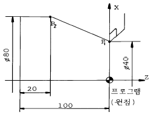
- G01 X80. W-80. F0.25;
- G01 X80. Z20. F0.25;
- G01 X80. Z-20. F0.25;
- G01 U80. W-80. F0.25;
(정답률: 32%)
27. LAN을 사용하는 주목적에 해당하는 것은?
- 데이터의 분산
- 데이터의 공유
- 데이터의 저장
- 데이터의 생성 및 소거
(정답률: 67%)
28. 웜기어에서 웜을 구동축으로 할때 웜의 줄수를 3, 웜 휘일의 잇수를 60 이라고 하면 피동축인 웜휘일을 몇 분의 1로 감속하는가?
- 1/15
- 1/20
- 1/25
- 1/180
(정답률: 70%)
29. CAD 시스템간의 제품 데이터 교환에 사용하는 소프트웨어가 아닌 것은?
- IGES
- SET
- STEP
- KSSM
(정답률: 34%)
30. 단판(單板)원판 마찰 클러치에 축추력(軸推力) P=60(㎏f)가 작용할 때 전달할 수 있는 토오크 T(㎏f-mm)은 얼마인가? (단, 원판마찰 클러치의 바깥 반지름 r1=120(mm) 안쪽 반지름, r2=80(㎜), 마찰면의 마찰계수 μ =0.1 이다.)
- 1200
- 600
- 720
- 480
(정답률: 25%)
31. 스프링 상수 2 ㎏f/㎜의 코일을 만들어 8 ㎏f의 무게를 달았다. 코일 소선은 2㎜의 피아노 선이고 코일의 유효감김수 n = 8일때, 코일 스프링의 지름은 얼마인가? (단, G = 8 x 103 ㎏f/㎜2이다.)
- 4㎜
- 5㎜
- 10㎜
- 18㎜
(정답률: 29%)
32. 원통커플링에서 원통을 졸라매는 힘을 P라 하면 이 마찰 커플링의 전달 토크는? (단, μ 마찰계수, 축의 지름을 d, 커플링의 길이를 L로 한다.)
- T = μ π Pd
- T = 2μ Pd
- T = μ π PdL / 2
- T = μ π Pd / 2
(정답률: 11%)
33. 볼베어링의 수명은?
- 하중의 3배에 비례한다.
- 하중의 3승에 비례한다.
- 하중의 3배에 반비례한다.
- 하중의 3승에 반비례한다.
(정답률: 30%)
34. 지름 60㎜의 강축을 사용하여 250rpm으로 54PS을 전달하는 묻힘키이(sunk key)의 길이는 다음 중 어느 것인가? (단, 키이의 허용전단응력 τ = 4.6㎏f/㎜2, 키이의 규격(폭 × 높이) b × h = 15㎜ × 12㎜이다.)
- 61.8㎜
- 74.7㎜
- 83.5㎜
- 93.4㎜
(정답률: 50%)
35. 2차원에서의 변환 행렬은 다음과 같이 쓸 수 있다. 다음 중 물체의 이동(Translation)에 영향을 미치는 것은?
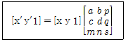
- a, b
- p, q
- m, n
- s
(정답률: 24%)
36. A점에서 B점으로 이동할 때 지령 방법이다. 틀린 것은?
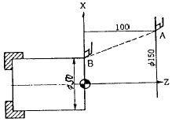
- G00 U-100.0 W-100.0;
- G00 U-50.0 ZO.O;
- G00 X50.0 W-100.0;
- G00 X50.0 Z0.0;
(정답률: 24%)
37. CNC선반의 조작 Key기능에 대한 설명으로 틀린 것은?
- ALTER는 메모리 내에 있는 내용을 다른 내용으로 변경할 때 사용한다.
- INSRT는 새로운 내용을 삽입할 때 사용한다.
- DELET는 메모리 내에 있는 내용을 추가할 때 사용한다.
- RESET는 편집 모드에서 프로그램을 첫 머리로 돌려 놓을 때 사용한다.
(정답률: 64%)
38. 지정된 모든 점을 통과하면서 부드럽게 연결한 곡선은?
- spline
- Bezier curve
- B-spline
- K-spline
(정답률: 75%)
39. 자료 전송방식 중에서 start bit와 stop bit에 의해서 전송문자를 구분하여 전송하므로 일명 start-stop bit 전송이라고 하는 전송방식을 무엇이라고 하는가?
- synchronous communication
- asynchronous communication
- parallel communication
- hand shaking communication
(정답률: 25%)
40. 리베팅 후의 리벳지름 또는 구멍의 지름 d[㎜], 리벳의 전단응력 τ [㎏f/㎜2], 리벳 또는 강판의 압축응력 σc [㎏f/㎜2] 인 겹치기 리벳이음에서 전단저항과 압축저항을 같도록 하면 강판의 두께 t[㎜] 를 구하는 식으로 옳은 것은? (단, 리벳의 길이 방향에 직각 방향으로 인장력 W[㎏f]이 작용한다.)
- t= d2πτ / 4σc
- t= dπτ / 4σc
- t= d2πσc / 4τ
- t= dπσc / 4τ
(정답률: 32%)
3과목: 자동제어
41. 유체의 교축에서 관의 면적을 줄인 부분의 길이가 단면 치수에 비하여 비교적 긴 경우의 교축을 무엇이라 하는 가?
- 오리피스(orifice)
- 다이아프램(diaphragm)
- 벤투리(venturi)
- 쵸크(choke)
(정답률: 24%)
42. 입력 응답시간이 15[㎳], 출력 응답시간이 10[㎳], 1 명령어 실행시간이 2[㎲]인 PLC에서 2000스텝의 프로그램을 실행시키는데 걸리는 총 시간은 몇 ms인가?
- 25
- 27
- 29
- 31
(정답률: 25%)
43. 공기 압축기에서 대기압 상태의 공기를 시간당 10m3씩 흡입한다. 이 공기를 700KPa로 압축하면 압축된 공기의 체적은 몇 m3인가? (단, 압축시 온도의 변화는 무시한다)
- 1.43
- 1.25
- 2.43
- 2.25
(정답률: 36%)
44. 다음 PLC 프로그램 명령어 중에서 입력의 내용과 거리가 먼 것은? ( 단, R : 내부릴레이, RN : 부정내부릴레이)
- 기호 R
- 기호 RN
- 부호

- 부호

(정답률: 54%)
45. 유압펌프 유량이 필요하지 않게 되었을 때 오일을 저압으로 탱크에 귀환시키는 회로는?
- 신호설정회로
- 언로드회로
- 저압제어회로
- 시퀀스회로
(정답률: 34%)
46. 방향제어 밸브에서 조작력이 작용되지 않고 있을 때의 밸브 위치는?
- 노말 위치
- 중립 위치
- 오프셋 위치
- 디텐트 위치
(정답률: 56%)
47. 다음의 그림은 왕복 압축기의 이상 사이클을 나타낸 P-V선도이다. 이때, 급속한 압축 작용으로 열이 다른 곳으로 도망갈 틈도 없는 경우는 단열 압축에 가까운 상태로 된다 이 경우를 바르게 표시한 것은?
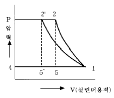
- 1 → 2
- 1 → 2'
- 5 → 1
- 5'→ 1
(정답률: 28%)
48. 공압 기본 논리 회로에서 입력되는 복수의 조건 중에 어느 한 개라도 입력 조건이 충족되면 출력이 되는 회로는 다음 중 어느 것인가?
- AND 회로
- OR 회로
- NOT 회로
- NOR회로
(정답률: 69%)
49. 선형제어계의 안정도를 판별하는 방법과 관계없는 것은?
- 나이퀴스트 판별법
- 근궤적도
- 보드 선도
- 과도 응답 판별법
(정답률: 23%)
50. 다음 그림의 명칭은?
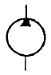
- 유압모터
- 공압모터
- 유압펌프
- 공압펌프
(정답률: 30%)
51. 1차 뒤진 요소의 인디셜(indicial) 응답에서 응답시간이 시상수(T=CR)와 같을 때의 응답값은 정상상태의 몇 %가 되는가?
- 34.5
- 63.2
- 70.7
- 83.5
(정답률: 50%)
52. 계자코일을 갖는 직류모터중 분권형모터에 대한 특징이 아닌 것은?
- 전기자코일과 계자코일이 병렬로 연결되어 있다.
- 기동토크가 높다.
- 무부하 동작에서 속도가 낮다.
- 좋은 속도조정 성능을 갖는다.
(정답률: 11%)
53. 다음의 기호가 나타내는 것은 무슨 게이지 인가?
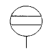
- 유량계
- 유면계
- 차압계
- 검류기
(정답률: 43%)
54. 가산 또는 감산 결과 MSB에서 자리올림이나 내림이 생겼을 때 set되는 flag는?
- zero flag
- carry flag
- sign flag
- parity flag
(정답률: 48%)
55. 작은 지름의 파이프에서 유량을 미세하게 조정하기에 적합한 밸브는?
- 니들 밸브
- 체크 밸브
- 셔틀 밸브
- 소켓 밸브
(정답률: 64%)
56.
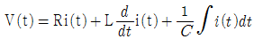
를 S함수로 표시하면 어떻게 나타내는가?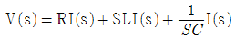
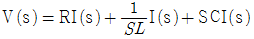
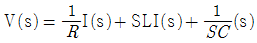
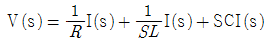
(정답률: 30%)
57. 다음 중 공압실린더의 지지형식이 아닌 것은?
- 풋형
- 램형
- 플랜지형
- 클래비스형
(정답률: 30%)
58. 물체의 위치, 각도, 자세 등의 변위를 제어하는 것은?
- 서보제어
- 자동조정
- PID제어
- 프로그램 제어
(정답률: 60%)
59. 그림과 같은 블록선도의 전달 함수는?
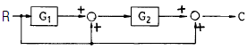
- G1+G2+1
- 1+G2+G1G2
- G1+G2+G1G2
- G1G2 / 1-G1G2
(정답률: 22%)
60. 다음 중 PLC의 구성요소가 아닌 것은?
- 입출력 인터페이스
- 메모리
- 릴레이
- 중앙처리장치
(정답률: 48%)
4과목: 메카트로닉스
61. 히터와 송풍용 팬에서 일정시간만큼 냉각을 위하여 스위치를 off한 후, 타이머의 설정 시간 만큼 송풍팬을 가동 후 본래의 상태로 복귀하려고 할 때 사용되는 회로는?
- 지연 복귀 동작 회로
- 반복 동작 회로
- 지연 동작 회로
- 일정시간 동작회로
(정답률: 45%)
62. 시퀀스 제어계의 신호 전달시 점선의 화살표 표시는 무엇을 뜻하는가?
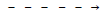
- 시동
- 소자
- 정지
- 감자
(정답률: 42%)
63. 그림과 같은 계전기 접점회로의 논리식은?
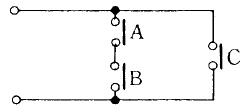
- A+B+C
- (A+B)C
- A·B+C
- A·B·C
(정답률: 64%)
64. 과부하 계전기를 표시하는 기호는?
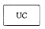
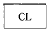
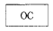
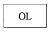
(정답률: 16%)
65. 공압 엑추에이터의 특징이 아닌 것은?
- 전기에 비해 에너지 비용이 비싸다.
- 30000N 이상의 힘을 필요로 하는 곳에는 적합하지 않다.
- 비압축성 매체를 이용하므로 저속으로도 속도 제어가 가능하다.
- 유압 엑추에이터에 비해 빠른 속도로 움직인다.
(정답률: 44%)
66. 공압 시스템에서 공기 건조기의 설치 장소로 적합한 곳은?
- 공기압 기기의 입구
- 공기압 실린더의 입구
- 압축기의 공기 흡입구
- 압축기의 공기 토출구
(정답률: 34%)
67. 다음 그림이 의미하는 시스템은 ?
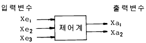
- 개회로(open loop control system)
- 폐회로(closed loop control system)
- 서보시스템(servo system)
- 피드백시스템(feedback control system)
(정답률: 50%)
68. 다음의 반도체 메모리 중 전원이 차단되면 내용이 지워지는 메모리는?
- RAM
- EAROM
- ROM
- PROM
(정답률: 42%)
69. 다음에 열거한 시퀀스 기기 중 수동 동작으로 자동복귀접점에 해당하는 기기는?
- 캠 스위치
- 누름버튼 스위치
- 리밋 스위치
- 토글 스위치
(정답률: 53%)
70. 다음 그림의 논리 회로에서 출력이 1이 되기 위한 입력값은?
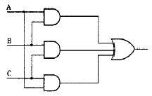
- B=1, A=C=0
- A=B=1, C=0
- A=1, B=C=0
- A=B=C=0
(정답률: 56%)
71. 다음 중 자계의 세기나 자극을 판단 할 수 있는 반도체 소자는?
- 홀 소자
- 포토 커플러
- 포토 다이오드
- 발광 다이오드
(정답률: 59%)
72. 광화이버 센서의 종류에서 광화이버의 형상에 따른 분류하는 방식이 아닌 것은?
- 분할형
- 평행형
- 렌덤 확산형
- 투과형
(정답률: 37%)
73. 조절기 중 조작력이 가장 큰 것은?
- 유압식
- 전기식
- 전자식
- 공기식
(정답률: 63%)
74. 다음 중 광 센서의 취급시 주의 사항이 아닌 것은?
- 2개 이상의 광 센서를 가까이 붙여 사용하지 않는다.
- 광 센서를 바닥면에 완전히 붙여 설치하지 않는다.
- 동력선 가까이 광센서의 케이블이 통과하지 않도록 한다.
- 광 센서 렌즈의 지름이 검출 대상 물체보다 큰 것을 선택한다.
(정답률: 71%)
75. 백열전등에 사용되는 스위치는 기능적으로 어떤 스위치인가?
- 유지형스위치
- 검출스위치
- 복귀a접점스위치
- 복귀 b접점스위치
(정답률: 45%)
76. 제어정보 표시형태에 따라 분류되지 않는 것은?
- 10진 제어계
- 2진 제어계
- 아날로그 제어계
- 디지탈 제어계
(정답률: 43%)
77. 다음 진리표의 gate는?
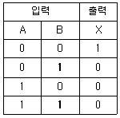
- AND
- OR
- NOR
- NAND
(정답률: 45%)
78. 그림과 같은 AND gate출력은?
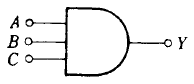
- Y=A+B× C
- Y=A· B· C
- Y=A+B+C
- Y=(A+B)C
(정답률: 64%)
79. 다음 불 대수의 정리 중 맞지 않은 것은?
- A+0=A
- Aㆍ0=0
- A+A=A
- AㆍA=0
(정답률: 60%)
80. 회전운동을 하지 않는 액추에이터는?
- 회전 실린더
- 회전날개 실린더
- 공압모터
- 탠덤 실린더
(정답률: 74%)